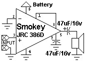
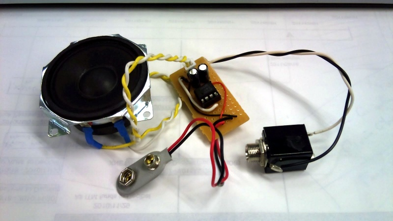
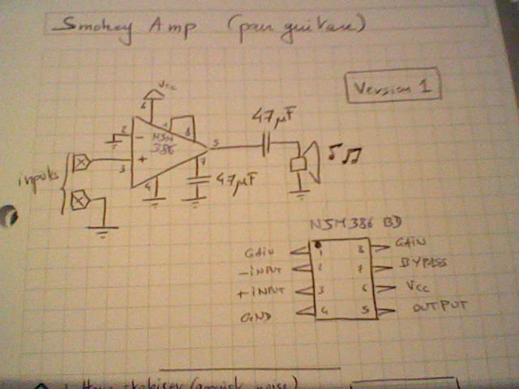
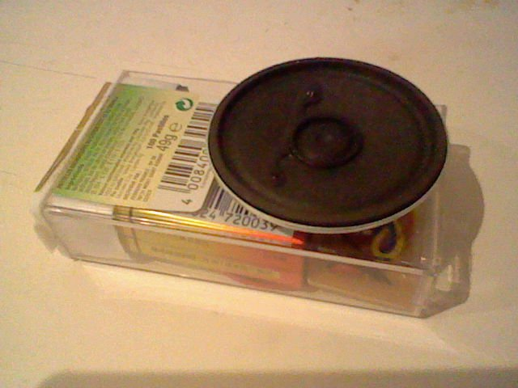
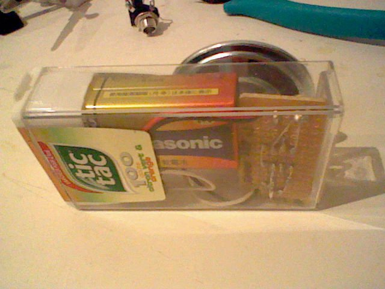

Version 1 info
Based around a LM386 amplifier (in my case a JRC 386), the idea was to make it for a guitarist colleague, and also for myself maybe.
20101026: version 1 is ready. Well well it's amplifying yes. It's over noisy also. And very sensitive to magnetic field and capacitance. That's awful, but maybe that plugged on a guitar it will be better? Tomorrow we'll see.
20101101: after a weekend of tests, good and bad. Good is the sound, nicely distorted, a bit heavy and a suprising energy for such a small circuit. Bad is that I can hear the radio (faint but present) and that the guitar cable is just a big radio antenna making the amp super sensitive to magnetic waves. Depends on where it is, sound change from great and clear to too noisy to hear yourself playing. How to fix this ? A small cap between the input pins ? Did it, not really better. Using ferrite beads ? Will try that tonight.
...continued on Smokey amp vII
Schema

The minimal schema, no gain (pin 1-8 are strapped), no volume knob. Schema found on the net.
Pictures

Version 1, simple as can be. No volume knob, no gain control, no polarity reverse protection, ... the root.



In a tic-tac box: the speaker is not the one on the top photo for the most observatives of you. Working fine, just added a switch on/off on the side.
Links
{kind=link}